Professional Summary
Full-Stack Developer based in Egypt with three years of production delivery, building and shipping business sites, stores and custom web applications end to end — database design, API layer, interface and deployment. TypeScript, Next.js, Prisma and PostgreSQL are the daily stack; Arabic-first AI integration and defensive hardening are applied to the products I run rather than offered as theory. Twenty-five verified certificates, published models and datasets on Hugging Face, and pull requests merged into codebases owned by Microsoft and Google.
Core Competencies
Experience
- Design and deliver production web applications end to end — domain model, API, interface, deployment.
- Architect full-stack solutions with Node.js, Bun, Svelte, MongoDB and tRPC.
- Set up CI/CD and containerised deployments with Docker and Netlify.
- Work directly with clients on scope, estimates and handover documentation.
- Deploy and maintain offline LLM environments with Ollama for local AI workflows.
- Build agent-based automation that amplifies developer productivity pipelines.
- Evaluate and integrate open models: LLaMA, Gemma, Mistral and Qwen.
- Built an Arabic localisation and documentation framework for the platform.
- Authored structured i18n translation files serving Arabic-speaking communities.
- Built game mechanics, AI behaviour trees and multiplayer networking in Unity and C#.
- Integrated the PlayFab cloud backend and Plastic SCM for collaboration.
Selected Projects & Open-Source Work
islam-elite-portfolio
Next.js · TypeScript · Tailwind18 production web applications delivered as one showcase site, each runnable with live demos.
github.com/TurboQuant
TypeScript · WebAssembly · Node.jsLossless compression for every file type, shipped with a browser-based console.
github.com/AndroidReverseEngineering-Guide
Markdown · Tooling · AutomationThe most-starred repository in the account — a practical reverse-engineering guide.
github.com/MasryGPT models & Arabic datasets
Qwen2.5 · QLoRA · PEFT · TransformersMasryGPT-Chat-1.5B, a lightweight LoRA adapter and an image model, plus four Arabic datasets.
huggingface.co/microsoft/markitdown — XLSX currency labels
Python · pandas · openpyxl · pytestRestores currency labels that pandas drops, including section-, condition- and locale-aware number formats.
github.com/microsoft/markitdown — Arabic/RTL PDF normalisation
Python · Unicode NFKC · pytestNormalises Arabic Presentation Forms in the built-in PDF converter with encoding-proof regression tests.
github.com/Certificates & Badges (25)
Every certificate is issued and verifiable — the full list with PDF originals is published at aslamalkarywk7.github.io/aslamalkarywk7.
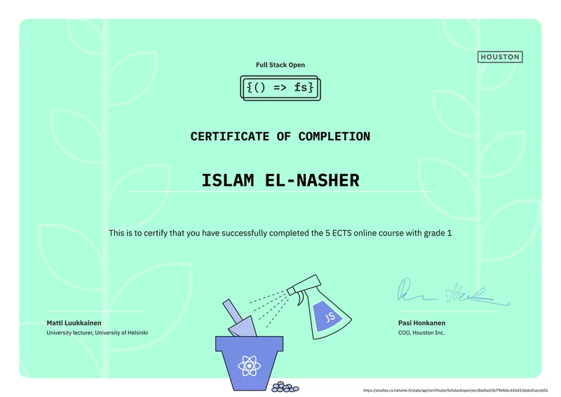
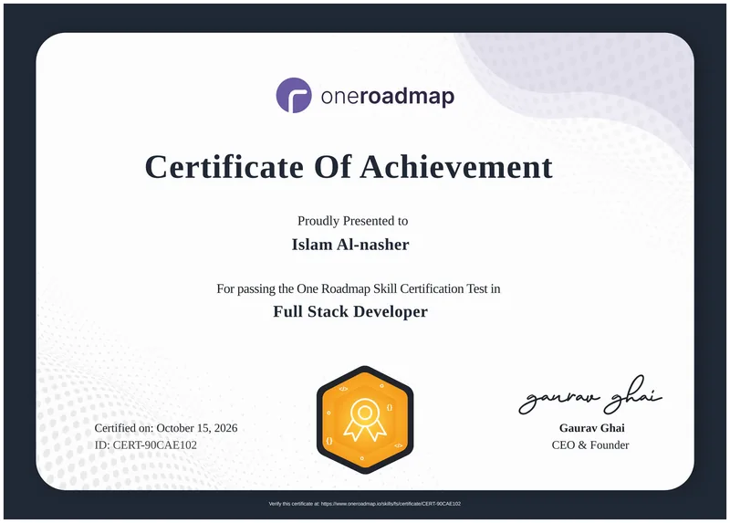
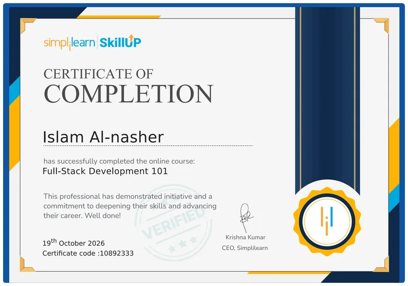
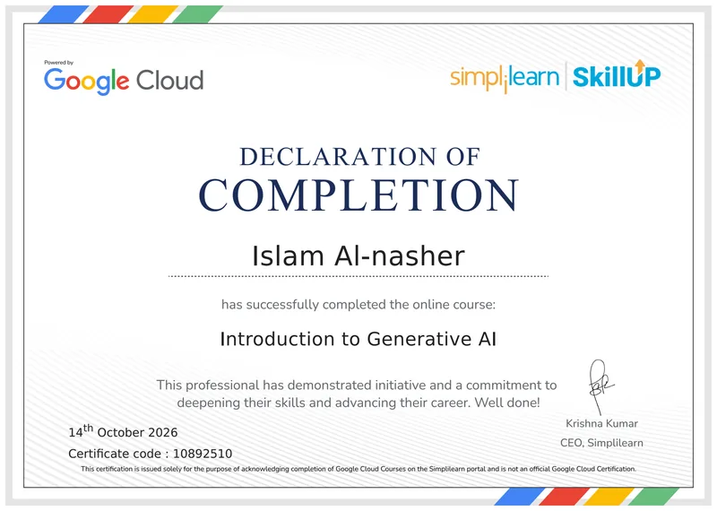
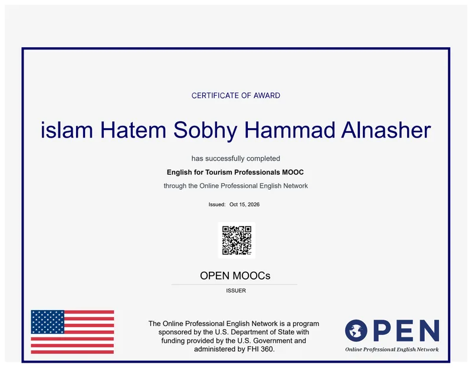
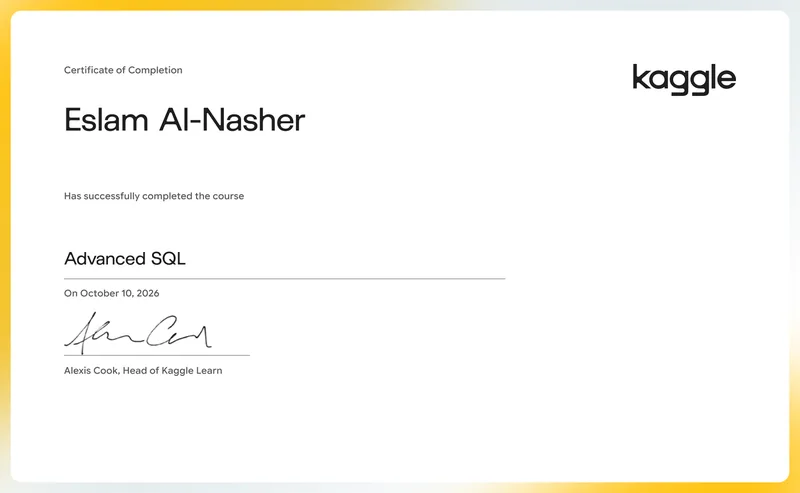
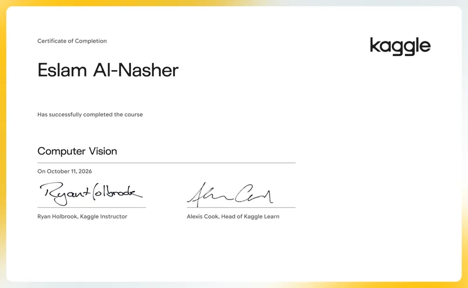
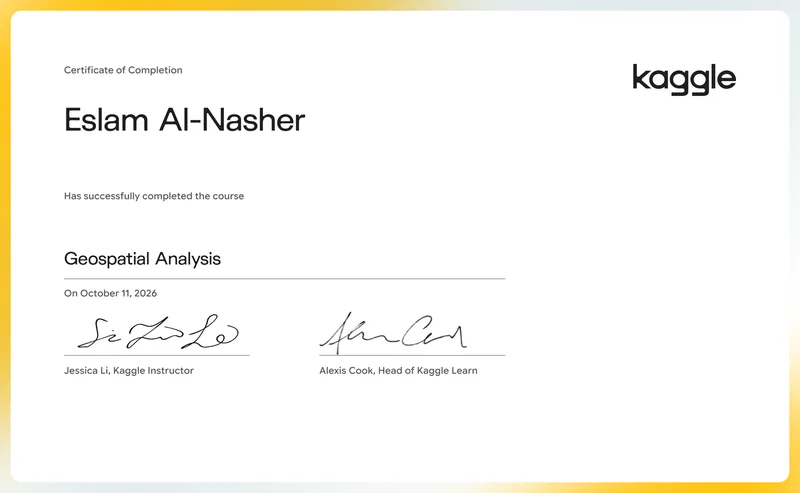
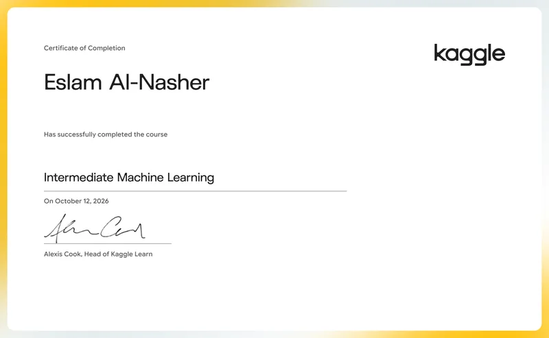
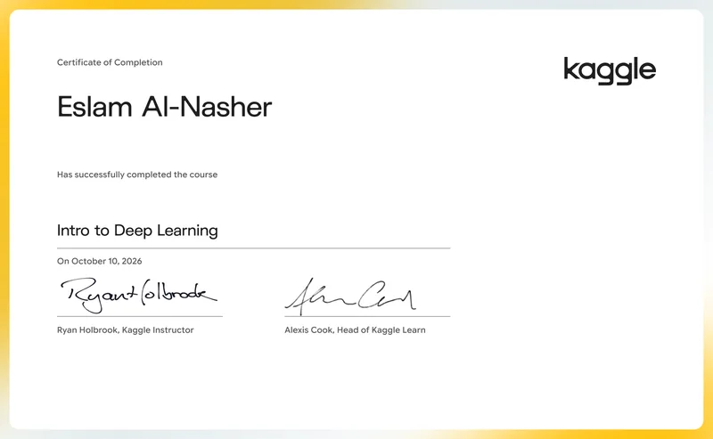
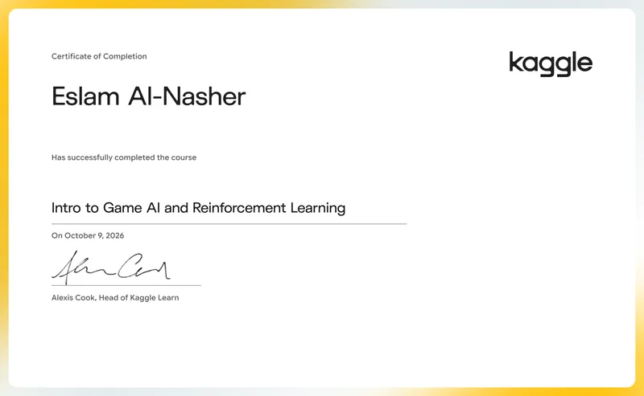
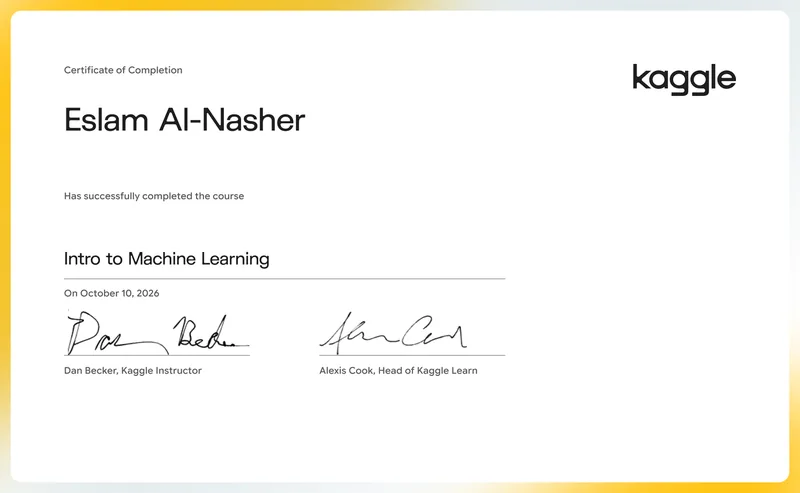
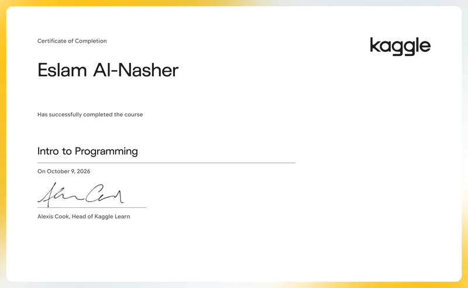
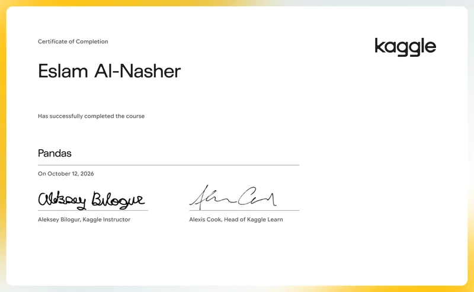
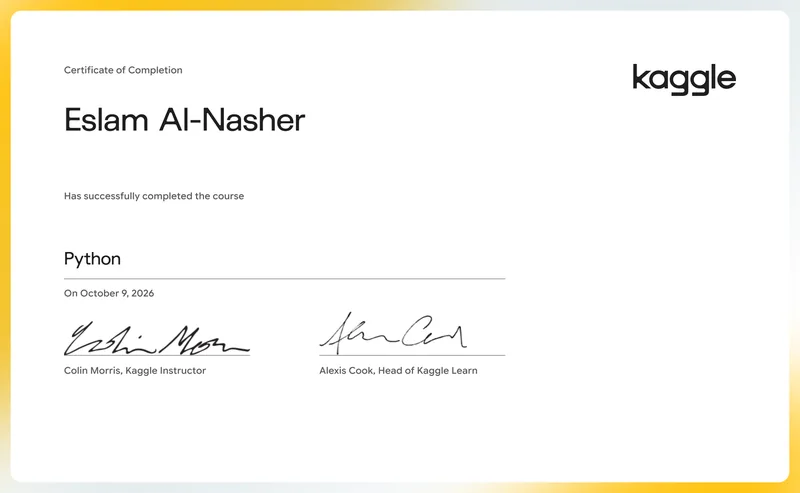
Education
- Enterprise systems design, database management, systems lifecycle and business process engineering.
- Electronics systems, embedded logic and computational theory fundamentals.
Islam Al-Nashar — Full-Stack Developer · aslamalkarywka@gmail.com · github.com/aslamalkarywk7